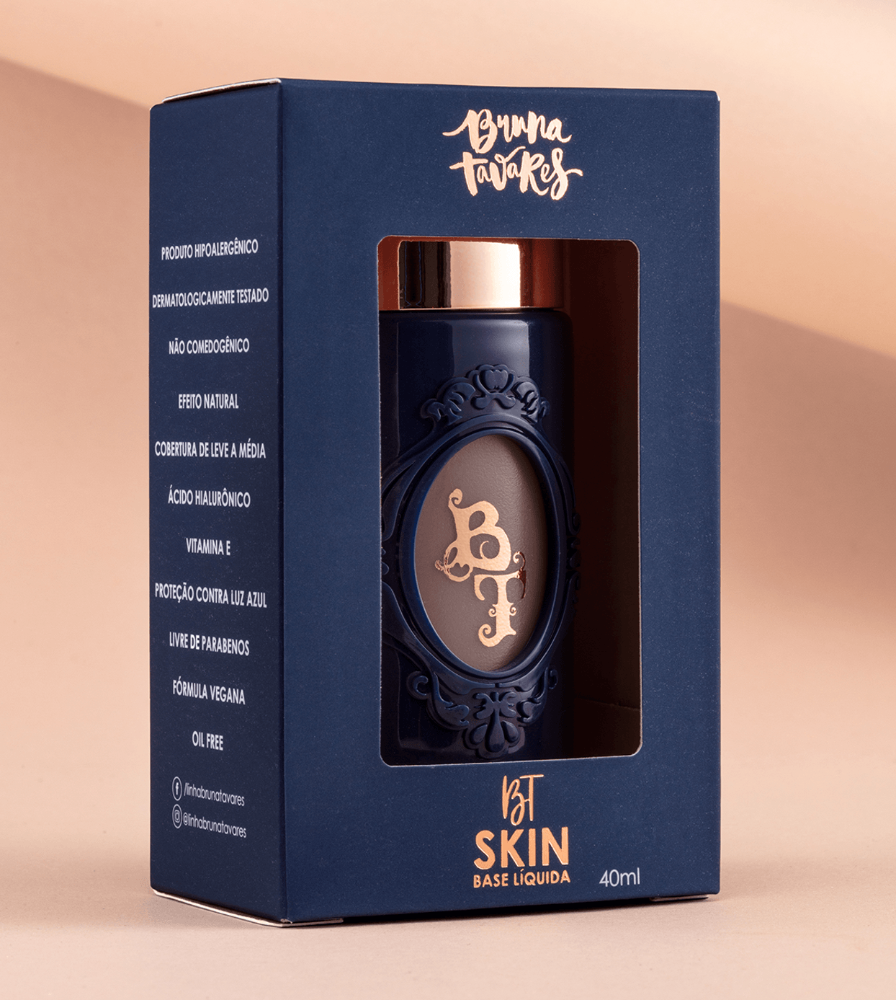

Base Bruna Tavares
Detalhes:
Alta pigmentação
Efeito segunda pele
Fina e confortável
Longa duração
Ácido Hialurônico
Bioativo Syn Coll
Acabamento aveludado
Oil Free - livre de óleos
Embalagem exclusiva que permite o uso até a última gota
Descrição:
Uma base líquida ultra fluida e super pigmentada. Por ter uma alta concentração de pigmentos, sua textura leve consegue garantir uniformidade aliada e um efeito natural. Possui acabamento aveludado e cobertura de leve a média, permitindo a construção de camadas. Além disso, atua promovendo diversos benefícios que vão além da maquiagem.
Principais avaliações
Avaliações: 4,9


Por recomendação de uma amiga eu comprei a base para experimentar e amei, pois ela não fica grudenta e é muito fácil de espalhar, quando acabar vou comprar outra